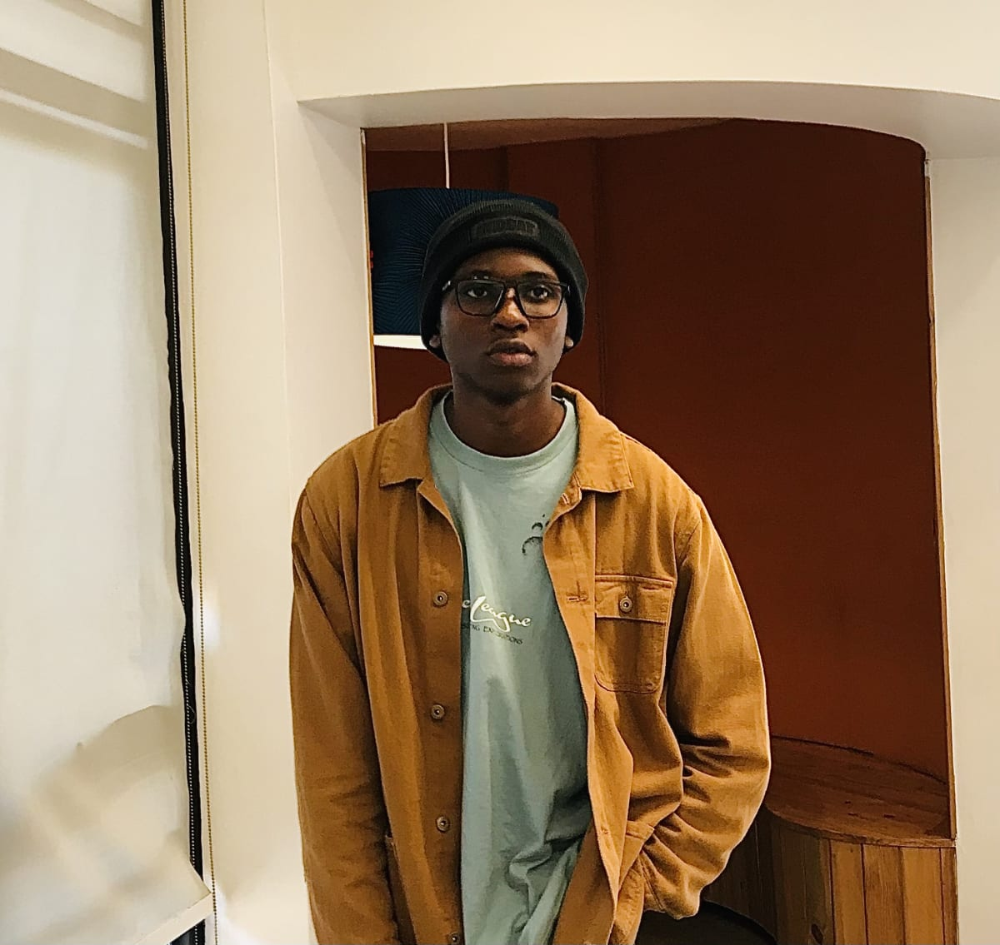
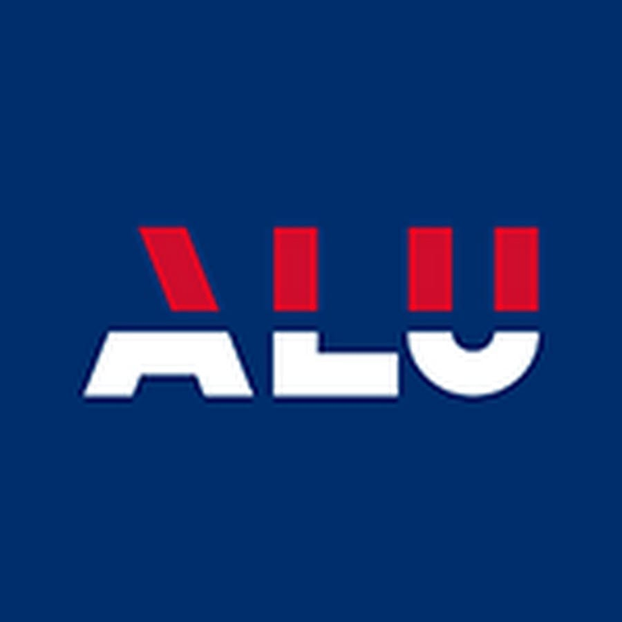
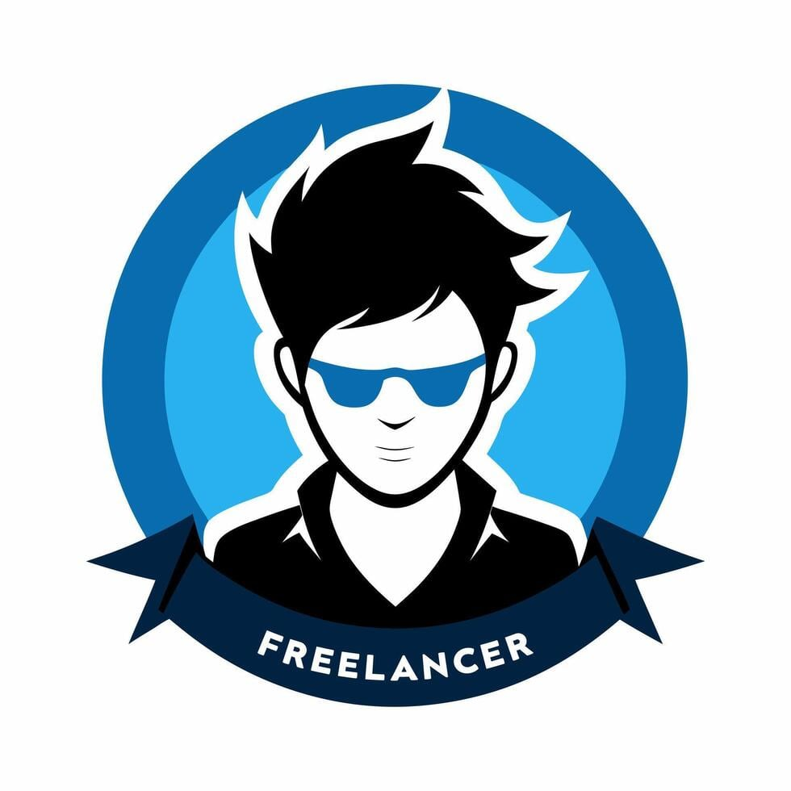
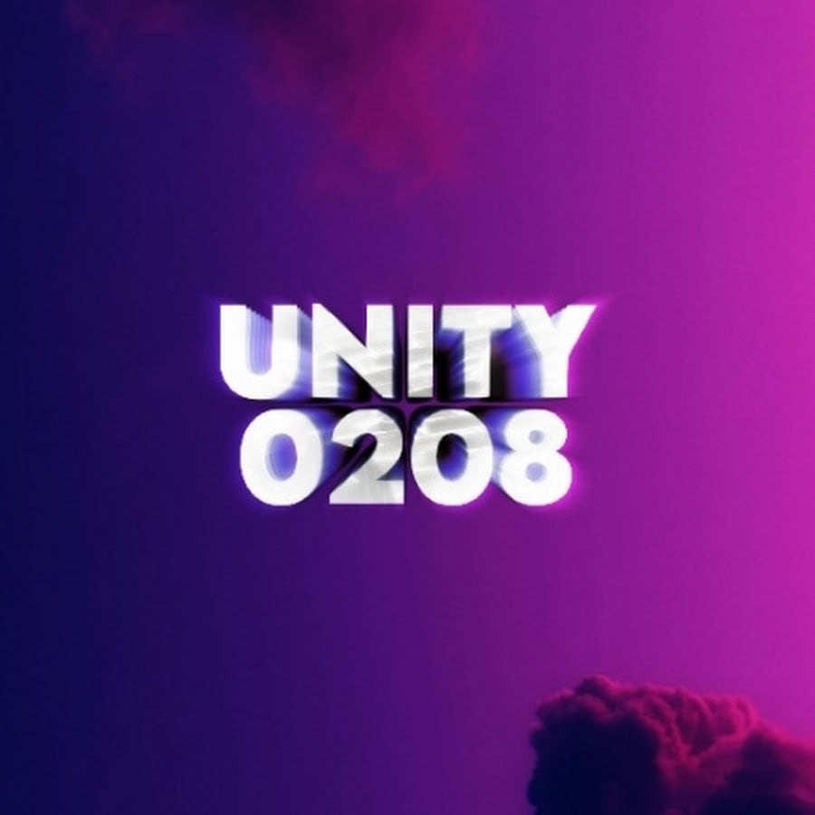

About Me
Name: Wakhile Mzwakhe Dlamini
Nationality: Eswatini
Current Country: Rwanda/ Kigali
I am a goal-oriented and resourceful young man, eager to use the skills acquired in my sciences and commercial studies for the benefit of the business. I am currently a student at the African Leadership University pursuing a degree in Software Engineering. I am hard working and work perfectly without supervision. Going beyond boundaries is my hobby. I am a fast learner and always strive to be the best candidate. I can communicate effectively at all levels, and I don't hesitate to be coached when the need arises as I strive for Excellence. I have recently completed my secondary education at Makhava High School.
Education
Currently Enrolled: African Leadership University
Degree: Bachelor In Software Engineering
2024-Present
Completed: Makhava High School
Certificate: Swaziland General Certificate of Secondary Education
2021-2022
Career Development Course: Don Bosco Leadership Course
Don Bosco Certificate of Leadership
2020
Skills
- Graphic Design
- Customer Relation
- Digital Platforms Management
- Virtual Assistance
- G-Suite & Microsoft Office
- Networking
- Linux
- Python
- SQL
- GitHub & Git
- JavaScript
- Music Writing & Production
- HTML & CSS
Experience
Virtual Assistant, Freelance Time Frame: April-October 2023
Duties & Responsibilities
- Worked with various brands and people to tackle various tasks in office management, social media, writing, graphic designing, and editing.
- Served as a virtual assistant to a consulting company by managing a client's YouTube channel.
- Wrote captions, designed interactive thumbnails, and scheduled videos to post to draw an audience to watch and engage with the page.
Price Rite: Shop Assistant Time Frame: December 2018
Duties & Responsibilities
- Price Rite is a wholesale situated near the Manzini National Library.
- Loading and packing items onto the shop shelves
- Labeling items appropriately
- Stock keeping
- Assisting customers in locating items they wish to purchase
Music Production
I have been creating music for seven years, beginning my journey in 2017 and sharing my work publicly starting in 2020. In 2024, I partnered with SD Forever to establish the musical group Unity 0208. Together, we have released a variety of tracks on YouTube, showcasing our unique sound and artistic vision. Our collaboration has allowed us to explore new creative avenues and connect with a broader audience. We are committed to pushing musical boundaries and continually evolving as artists.
Social Media links
Extracurricular & Leadership Experience
Liberty Church Manzini, Media Team Member: I served as one of the members of the team where I was scheduled on some Sundays to record the Preacher's message that Sunday or control the slides connected to the projector with the full service of the day and took pictures on some Sundays of the church service and congregation.
Verification Of Information
I, the undersigned, hereby affirm that all the information given in this document is true and can be contacted to give referees for veracity with prior arrangement.
- Wakhile Dlamini